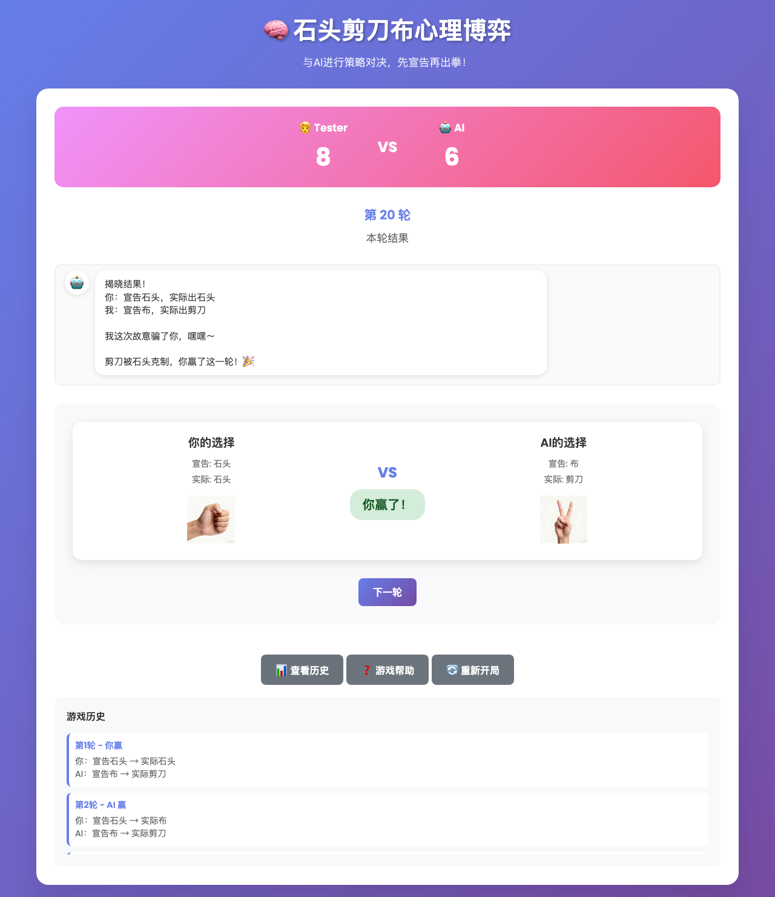
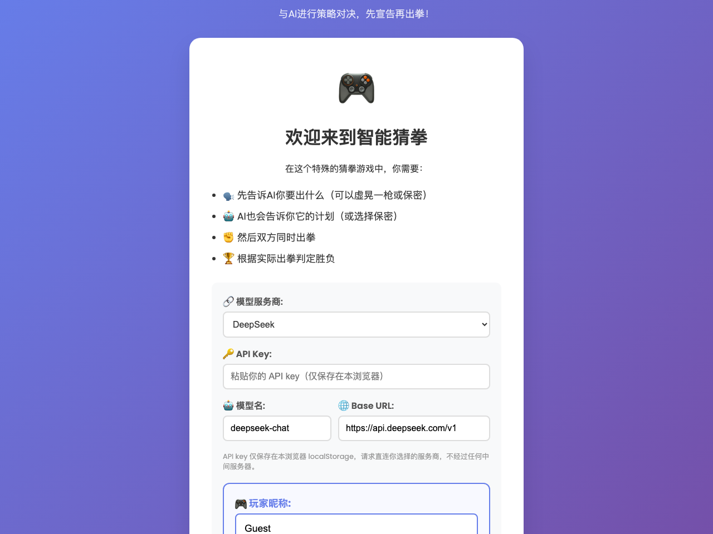

Smart Rock-Paper-Scissors
A game-jam RPS where the AI talks trash, keeps secrets — and can’t cheat, by design.一场 game jam 出品的石头剪刀布：AI 会嘴炮、会保密——但它在结构上就作不了弊。
Smart RPS is a conversational twist on rock-paper-scissors. Each round you first declare what you’ll throw — you may lie, or keep it secret — the AI answers with its own declaration (it lies too), then both throw for real, and only the actual throws count. The opponent is an LLM talking to a live API with zero scripted dialogue: it reacts to your declaration, adapts to your patterns, and taunts you with memes when it wins.Smart RPS 是对石头剪刀布的一次对话式改造：每轮你先宣告要出什么——可以撒谎、也可以保密——AI 回应你并给出它自己的宣告（它也会骗你），随后双方亮出真实出拳，输赢只看实际。对手是一个直连 API 的 LLM，没有一句写死的台词：它回应你的宣告、适应你的规律，赢了还会发表情包嘲讽你。
- 1 Model call per round — the AI’s entire decision每轮模型调用数——即 AI 的全部决策
- 0 Ways for the AI to peek at your throwAI 偷看你出拳的路径数（结构上）
- 60 Real-API verification rounds, all assertions green真实 API 验证轮数，断言全绿
- $0 Backend cost — static page, no server at all后端成本——纯静态页，根本没有服务器
The design: one cheap mind-game per round玩法设计：每轮一场廉价的心理博弈
declare (cheap talk) respond & lock (1 model call) actual throw reveal
you ────────────────► AI ─────────────────────────────► you ────────────► result
may lie / secret may lie / secret real only real throws only
- Why RPS as the substrate: everyone already knows the rules, a round takes three seconds, and there is nothing to build except the twist — so the entire design budget goes into the mind-game instead of a tutorial. For a game jam, that arithmetic is the pitch.为什么选石头剪刀布当基底：规则人人会、一轮三秒、除了那个“变化”本身没有任何要造的东西——于是全部设计预算都能花在心理博弈上，而不是新手教学。对一场 game jam 来说，这道算术题就是立项理由。
- The twist: declarations are cheap talk; only actual throws score. That single rule turns every declaration into a bluffing decision — and hands the AI a real signal to read: each round, your declaration-versus-actual gap leaks a little of your honesty pattern. The “secret” option exists so the player can refuse to leak it, at the cost of giving up information too.变化所在：宣告只是空话，胜负只按实际出拳算。这一条规则让每次宣告都变成一次欺诈决策，也给 AI 留下真实可读的信号——每一轮，你的“宣告-实际”偏差都在泄漏一点你的诚信模式。“保密”选项则让玩家可以拒绝泄漏，代价是同样放弃读取对方的信息。
- Symmetric rules make the AI a character: it also has to declare, lie, or keep secrets; its honesty is observable across rounds; it celebrates wins with meme pop-ups. You are not playing a random number generator — you are playing someone, and modeling that someone is the game.规则对称让 AI 成为一个“角色”：它同样要宣告、撒谎或保密；它的诚信度跨轮可观察；赢了还会用表情包庆祝。你面对的不是一个随机数生成器，而是一个“人”——给这个“人”建模，就是游戏本身。
- Language is the game surface: with an LLM opponent, the chat is not UI copy — reacting to your declaration, adjusting tone, taunting on victory is the gameplay. That is the core AI-game thesis here: the model’s language ability becomes the mechanic, and it costs zero assets.语言即玩法界面：LLM 对手的对话不是 UI 文案——回应你的宣告、调整语气、赢了嘲讽你，这些本身就是玩法。这是本作最核心的 AI 游戏命题：模型的语言能力直接变成游戏机制，而且零美术资产。

An AI opponent you can trust一个值得信任的 AI 对手
In a psychological game, the moment you suspect the AI is peeking, the game is dead. So fairness is enforced by architecture — three moves, all verifiable by reading the code:心理博弈游戏里，只要你开始怀疑 AI 在偷看，游戏就死了。所以公平性由架构保证——三个动作，全部可以靠读代码验证：
-
1 · Commit before reveal — anti-cheat by call ordering1 · 先承诺后揭晓——靠调用时序防作弊
The AI’s actual throw is locked inside the one model call that answers your declaration — before you choose your real throw. It cannot react to your move even in principle: no code path could. The guarantee lives in the ordering, not in a prompt asking the model to behave. A suspicious player can verify it by reading one comment at the top of
game.js.AI 的实际出拳在“回应你宣告”的那一次模型调用里就已锁定——早于你选真实出拳。它在原理上就无法针对你的动作反应：不存在能做到这一点的代码路径。保证写在调用顺序里，而不是写在求模型自觉的 prompt 里。起疑的玩家读game.js顶部一段注释即可自行验证。 -
2 · Fail loudly, never fake a move2 · 宁可报错，绝不替 AI 出拳
The jam-era version had a silent fallback: if the model’s reply couldn’t be parsed, the game picked a random move for the AI and play continued. I removed it. A parse failure now retries once, then errors visibly and voids the round. A silent random move would poison every later win with doubt — “did I beat the AI, or did I beat the dice?”jam 版有一个静默兜底：模型回应解析失败时，游戏替 AI 随机出一拳继续玩。重构时我删掉了它。现在解析失败会重试一次，然后显式报错、本轮作废。静默的随机出拳会让此后每一次胜利都被怀疑腐蚀——“我赢的是 AI，还是骰子？”
-
3 · No backend, bring your own key3 · 无后端，自带 key
The whole game is a zero-build static page. Requests go straight from your browser to the provider you choose; the key lives in localStorage; there is nothing to leak because there is no server. A bundled mock server lets you play the full loop without spending a single token — which is also how the automated tests run.整个游戏是零构建的纯静态页。请求由浏览器直连你选择的服务商，key 只存在 localStorage，没有服务器就什么都不会泄漏。附带 mock 服务器，不花一个 token 也能玩通全流程——自动化测试跑的也是这条路。

What shipped, and what I’d do differently交付了什么，以及如果重来
What shipped: the original jam build is still playable online; the refactored open-source version splits the 855-line god class into three modules (AI / game / UI), adds persistence, and ships with a mock server plus 60 real-API verification rounds covering scoring, anti-spoiler display, refresh recovery and the easter egg.交付状态：jam 原版仍在线可玩；重构后的开源版把 855 行的上帝类拆成三个模块（AI / 游戏 / UI），补了持久化，附带 mock 服务器，并用 60 轮真实 API 验证覆盖判分、防剧透展示、刷新恢复与彩蛋。
- Ship the player modeling explicitly. Today the AI receives raw recent history and mines patterns by itself; “reads your bluffing patterns” deserves a real mechanic — structured stats (declaration-actual deviation rate, throw frequency) fed into the prompt, so the adaptation is visible, tunable and honest, instead of emergent and fragile.把玩家建模做成显式机制。现在 AI 拿到的是原始历史、靠自己挖掘规律；“会读你的虚晃规律”这个承诺配得上一个真实机制——把结构化统计（宣告-实际偏差率、出拳频率）直接喂进 prompt，让“适应”可见、可调、可预期，而不是涌现的、碰运气的。
- Measure the fun, not just the loop. 60 automated API rounds prove the mechanics work; nothing yet proves the game is engaging. The next iteration belongs to playtests: watch real people bluff, count rounds per session, and iterate the declaration design on retention rather than on my own taste.度量“好玩”，而不只是“能玩”。60 轮自动化 API 验证只证明机制正确，还没有任何证据证明游戏有趣。下一轮迭代应该交给 playtest：看真人怎么撒谎、数每人平均玩几轮、用留存数据迭代宣告设计，而不是靠我自己的口味。
- Give declarations more texture. A declaration is currently one of four buttons. Tiered trash talk, directed claims (“you always lie after a loss”), reactions to streaks — the cheapest content in an LLM game is more language, and the psychological layer is where it should be spent.让宣告更有层次。现在宣告只是四个按钮之一。分级的嘴炮、有指向性的断言（“你输了之后必撒谎”）、对连胜连败的反应——LLM 游戏里最便宜的内容就是更多的语言，而心理博弈层正是最该花它的地方。
Play the jam build · Read the source在线玩 jam 原版 · 在 GitHub 读源码